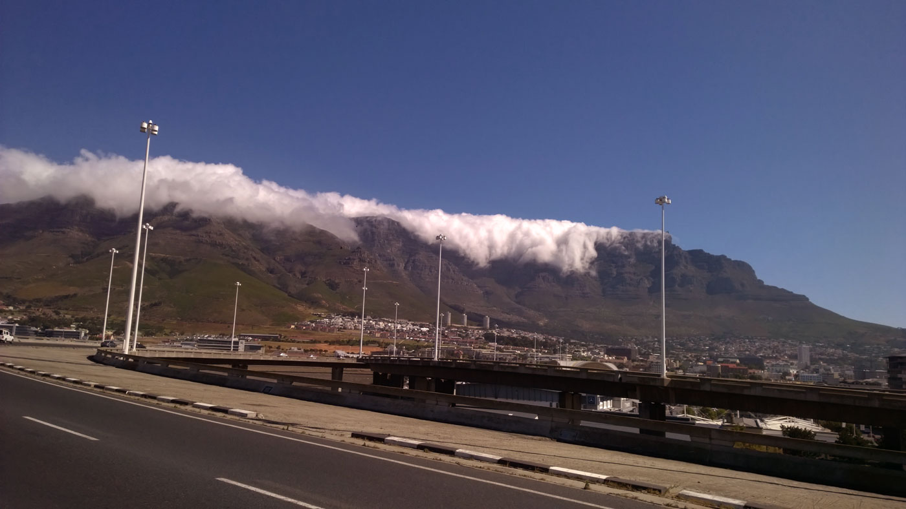
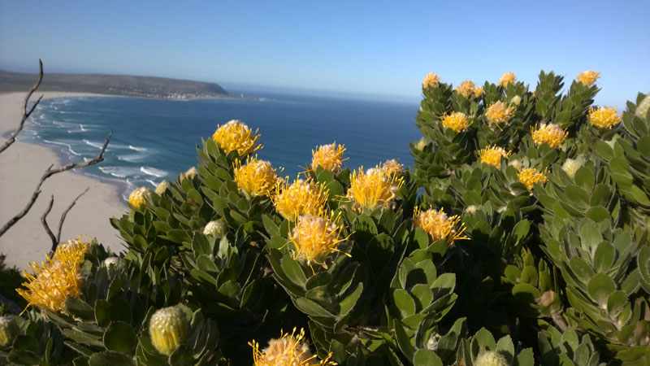
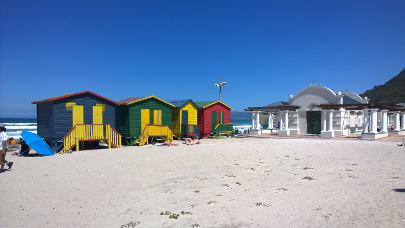
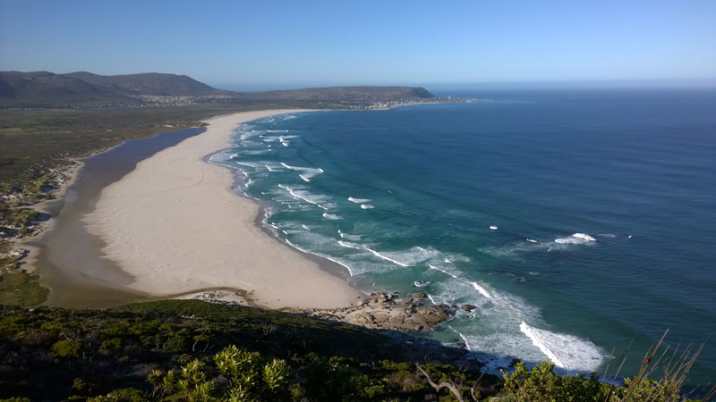
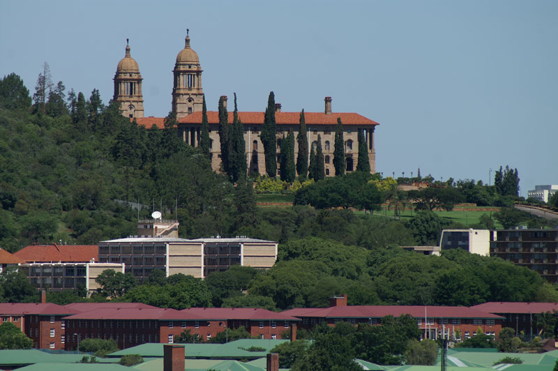
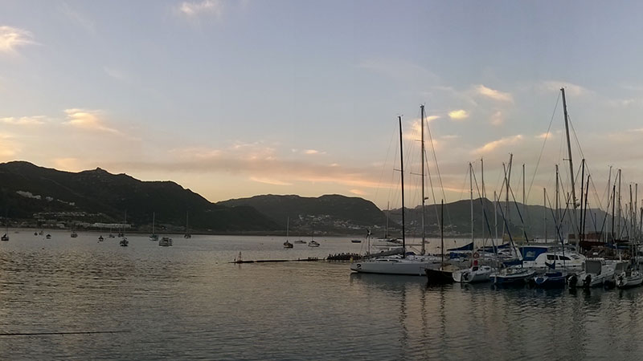
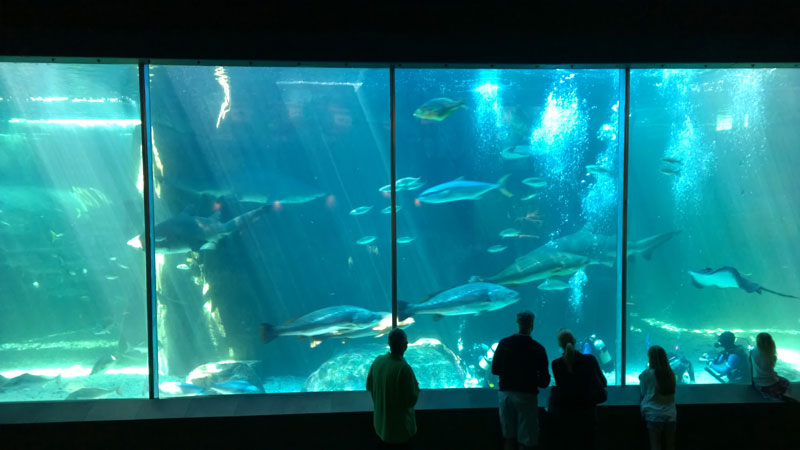
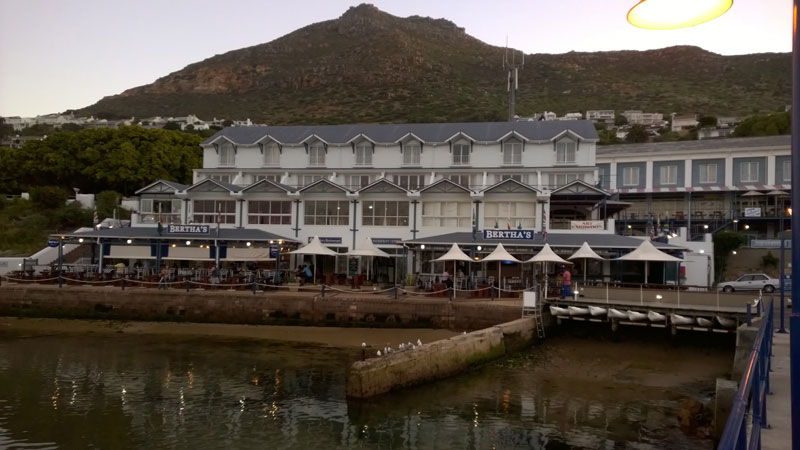
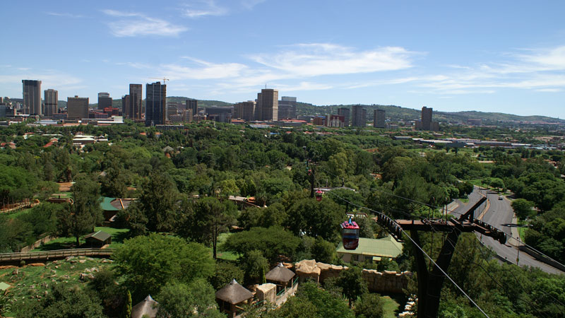

Daar is nêrens soos Kaapstad nie - 'n samesmelting van kulture, kombuise en landskappe; 'n unieke stad wat bekroon word deur die pragtige Tafelberg Nasionale Park.
Tafelberg
Die trots van Kaapstad, Tafelberg, is 'n ikoon wat wêreldwyd erken word. Die unieke tafelblad is dikwels bedek met fyn wolk, wat die plaaslike bevolking die 'tafeldoek' noem. Neem die karretjie na die berg of klim op die selde gereide bergpaadjie, en verras jou deur die uitsigte oor ons pragtige stad.
Aard
Die pragtige landskappe van Kaapstad is werklik uniek. Geniet ons pragtige wit sandstrande of stap deur die inheemse Afrika-bos, 'n huldeblyk aan die volke en kulture wat voor ons gekom het.
Muizenburg
Die wit sand met die kontras van die kleurryke strandkuilhutte is 'n wonderlike gesig in 'n stranddorp-atmosfeer. Surfers was oral toe ons hier was.
Noordhoek
Die Noordhoek-vallei bly een van Kaapstad se kosbare bestemmings. Dit is aan die voet van Chapman's Peak geleë en omring deur Tafelberg Nasionale Park.
Kultuur
Kaapstad is 'n smeltkroes van mense en kulture en die uiteenlopende erfenis van die stad kan verken word deur sy historiese argitektuur en kleurryke kookkuns.
Kaapkultuur
Kaapstad bied baie geleenthede om ons kultuur te beleef. Van ons geskiedenis om die sewe seë as Nederlandse setlaars te vaar, tot ons tradisionele danse wat deur die Kaapse Khoekhoe uitgevoer word, het Kaapstad iets vir almal.
Seelewe
Kaapstad bied baie insigte oor die lewe op die see. Die oudste stad in Suid-Afrika, en die snaaksste, is daar baie maniere om ons daaglikse lewe te ervaar, van paddleboarding teen dagbreek in Port Alfred tot swem in Nordhoek in die middag.
Mense
Kaapstad is 'n smeltkroes van mense en kulture en die uiteenlopende erfenis van die stad kan verken word deur sy historiese argitektuur en kleurryke kookkuns.
Kombuise
Kaapstad is 'n smeltkroes van mense en kulture en die uiteenlopende erfenis van die stad kan verken word deur sy historiese argitektuur en kleurryke kookkuns.
Kaapkultuur
Kaapstad bied baie geleenthede om ons kultuur te beleef. Van ons geskiedenis om die sewe seë as Nederlandse setlaars te vaar, tot ons tradisionele danse wat deur die Kaapse Khoekhoe uitgevoer word, het Kaapstad iets vir almal.
Seelewe
Kaapstad bied baie insigte oor die lewe op die see. Die oudste stad in Suid-Afrika, en die snaaksste, is daar baie maniere om ons daaglikse lewe te ervaar, van paddleboarding teen dagbreek in Port Alfred tot swem in Nordhoek in die middag.
Gebeure
Kaapstad is 'n smeltkroes van mense en kulture en die uiteenlopende erfenis van die stad kan verken word deur sy historiese argitektuur en kleurryke kookkuns.